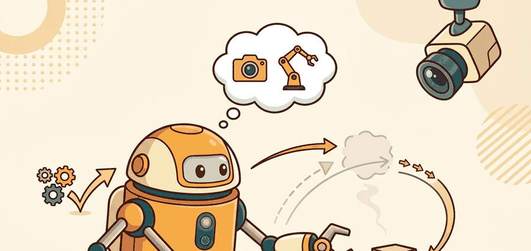

"A VLA policy is a contract between language grounding, image tokens, robot state, and action decoding."
A Grounded AI Agent

This section assumes familiarity with vision-language model architecture from section 32.1 and with action chunking from section 22.2. If you already understand how a transformer encodes image and text tokens jointly, you can skim the first subsection and start at "The Interface Contract." The VLA policy formulation introduced here is extended in section 34.2 (training objectives and data) and section 34.3 (inference-time control loops), and the action-head design recurs in Part 5 alongside diffusion and flow-matching policies.
A VLA can name an object and still fail the motion. Always evaluate grounding, action accuracy, latency, and recovery as separate properties.
A robot arm hovers over a cluttered table. You say "hand me the blue mug." The model identifies the mug, localises the handle, plans a grasp, and moves the arm, all from a single forward pass through a transformer trained on internet video and robot demonstrations. That is not science fiction: it is what production VLAs do today, and it is why the field shifted so sharply after 2022. Vision-language models already cracked open-ended understanding; adding an action head turns that understanding into physical behaviour. In this section you will see exactly where that boundary sits, what the action head commits to, and why every semantic claim the model makes must survive the much harsher test of real-world control.
Why VLMs Are Not Enough
A vision-language model can describe a scene, answer a question, or identify an object. That is useful, but embodiment adds a harder requirement: the answer must change the world. If the instruction is "put the cup on the coaster," the system must decide where the cup is, where the coaster is, which grasp is feasible, how the arm should move, when the gripper should close, and how to recover if the cup slips. This is the gap between knowing and doing, and bridging it requires an action head.
A VLA model extends the multimodal stack by adding an action channel. Formally, it learns a policy $\pi_\theta(a_{t:t+H} \mid o_{1:t}, q, r_t)$, where $o$ is visual observation, $q$ is the language instruction, $r_t$ is robot state, and $a_{t:t+H}$ is an action chunk over a short horizon. The exact action representation varies across systems: discrete tokens in RT-1 and RT-2, diffusion or flow outputs in RDT and pi-zero, and compressed action tokens in FAST-style autoregressive policies. The scale of the gap this closes is stark: a pure VLM prompted to move a robot arm achieves near-zero success on physical pick-and-place tasks, while RT-2, the same PaLI-X backbone with only an action head added, reaches 62% success on novel objects it had never seen in robot data, using the web knowledge already baked into the pretrained weights.
Language tells the policy what counts as progress, vision tells it what the world currently affords, and the action head commits to a motor trajectory. The action head is where a VLA stops being a scene interpreter and becomes an embodied policy.
Algorithm: VLM-to-VLA Grounding and Action Selection
Input: language instruction $q$, visual observation sequence $o_{1:t}$ (RGB frames), robot state $r_t$ (joint angles, end-effector pose), policy parameters $\theta$
Output: action chunk $a_{t:t+H}$ (motor commands over horizon $H$)
- Encode each image frame $o_i$ through the vision encoder to obtain patch token embeddings $z_i^v \in \mathbb{R}^{N_v \times d}$.
- Tokenize the language instruction $q$ through the text encoder to obtain token embeddings $z^l \in \mathbb{R}^{N_l \times d}$.
- Concatenate all tokens into a joint sequence: $z = [z^l; z_1^v; \ldots; z_t^v; z^r]$, where $z^r$ is a linear projection of $r_t$.
- Pass $z$ through the cross-modal transformer to produce contextualized representations; retain the final hidden state $h \in \mathbb{R}^d$.
- Determine the action head type: if discrete-token mode, project $h$ onto per-dimension bin logits and decode by argmax to get $a_{t:t+H}$; if continuous mode, proceed to step 6.
- Sample initial noise $\epsilon \sim \mathcal{N}(0, I)$ and run the denoising network $D_\phi$ for $K$ steps, conditioned on $h$, to produce a smooth trajectory: $a_{t:t+H} = D_\phi^{(K)}(\epsilon \mid h)$.
- Apply action normalization: $\hat{a} = \mu_a + \sigma_a \cdot a_{t:t+H}$ using dataset statistics $(\mu_a, \sigma_a)$ to recover physical units.
- Check $\hat{a}$ against workspace limits and joint-angle bounds; clamp any out-of-range dimension and record a violation flag.
- Send $\hat{a}$ to the low-level controller, which executes commands at the servo rate (typically 100 to 500 Hz) while the policy runs at its own inference rate.
- Observe the next state $r_{t+1}$ and frame $o_{t+1}$; if the task success criterion $\nabla_\theta \mathcal{L}$ has not been met and the episode horizon allows, increment $t$ and return to step 1.
Consider a specific case: RT-2 receives the instruction "pick up the green block" alongside a 300x300 RGB frame showing a tabletop with three blocks. The VLM backbone tokenizes the image into roughly 256 patch tokens and the instruction into about 10 text tokens. The transformer processes all 266 tokens together, and the action head projects the final hidden state onto 256 discrete bins per joint dimension, producing an 8-dimensional discretized action (6 arm joints plus gripper width plus vertical motion) at 3 Hz. The controller on the physical robot receives this token sequence, maps each bin index back to a joint-angle delta, and sends the resulting command to the low-level PD controller at 500 Hz. The full loop: image in, token stream out, bin-to-delta mapping, joint servo. Each of those four transitions is a separate failure point.
When deploying a pre-trained VLA on hardware that differs from the training fleet, always re-compute per-dimension action statistics (mean and standard deviation) from your own demonstration data and pass them to the normalization layer before fine-tuning. OpenVLA exposes this as --action_norm_stats at the fine-tuning entry point; skipping it causes the action head to output values in the wrong physical range even when task accuracy on held-out prompts looks correct. A quick sanity check: log the raw unnormalized action outputs for the first ten timesteps and verify they fall within the robot's joint-angle limits before running any hardware rollout.
The action head is a small learned module attached to the transformer's output. In discrete-token systems like RT-2, it is a linear projection onto a vocabulary of discretized action bins, one per action dimension, and the output is decoded by argmax at inference time. In continuous systems like pi-zero or RDT, it is a denoising network (diffusion or flow-matching) conditioned on the transformer's final hidden state: the network iteratively refines a noise vector into a smooth trajectory over 10 to 50 denoising steps. The choice between these two routes determines inference latency, action smoothness, and how the policy handles multi-modal distributions (where the same scene admits more than one valid motion).
The Interface Contract
The most useful way to read any VLA paper is to ask four interface questions. What observations enter the model? What robot state is exposed? What action space exits the model? What controller consumes those actions? This contract is the bridge back to Chapter 2 on action representations and Chapter 7 on controllers versus policies.
Code Fragment 1 makes the VLA interface concrete with typed containers. It does not run a neural policy, it shows the contract that every neural policy must satisfy.
# Minimal VLA interface: image features, instruction text, and robot state enter together.
# The policy returns an action chunk, not a single ungrounded language answer.
from dataclasses import dataclass
import numpy as np
@dataclass
class VLAObservation:
image_embedding: np.ndarray
instruction: str
joint_state: np.ndarray
def as_row(self) -> dict[str, object]:
return asdict(self)
@dataclass
class ActionChunk:
delta_xyz: np.ndarray
gripper_open: np.ndarray
obs = VLAObservation(
image_embedding=np.array([0.12, 0.88, 0.41]),
instruction="pick up the red block",
joint_state=np.array([0.0, 0.4, -0.2, 0.1]),
)
chunk = ActionChunk(
delta_xyz=np.array([[0.02, 0.00, -0.01], [0.01, 0.01, -0.02]]),
gripper_open=np.array([1.0, 0.0]),
)
print(obs.instruction)
print(chunk.delta_xyz.shape)pick up the red block (2, 3)
VLAObservation and ActionChunk classes show the contract between perception, language, proprioception, and control. Notice that the action is a short sequence, which gives the controller enough temporal context to move smoothly.The hand-built interface above is about 25 lines. With LeRobot or OpenVLA tooling, the same contract is mostly declared through dataset features and policy configuration in a few lines, while the library handles image transforms, action normalization, batching, checkpoint loading, and device placement. Keep the manual version for debugging because it names every boundary that can fail.
# LeRobot shortcut: inspect the observation and action schema before training.
# The dataset object exposes cameras, robot state, language task, and action chunks.
from lerobot.common.datasets.lerobot_dataset import LeRobotDataset
dataset = LeRobotDataset("lerobot/aloha_static_coffee")
print(dataset.features.keys())
print(dataset.meta.info.get("fps"))LeRobotDataset shortcut replaces custom schema plumbing with a maintained dataset interface. It handles metadata, episode indexing, media decoding, and action field conventions internally.Figure 34.1 should be read as the minimal VLA interface: instruction, visual observation, proprioception, action representation, and rollout evidence must all be named before behavior is interpreted.
Build And Evaluation Checklist
Curriculum, depth, and self-containment. The VLM to VLA shift is a change in output contract. The model stops producing descriptions and starts producing robot actions that must satisfy timing and safety constraints. For From VLMs to VLAs: the core idea, the practical reading is to pin down the interface, assumptions, concrete example, and failure mode before comparing methods.
Production and evaluation contract. A VLA is a policy with language conditioning, not a captioner with a gripper. For From VLMs to VLAs: the core idea, treat the diagram, code, table, exercise, warning, and references as one evidence packet: boundary, artifact, tool choice, transfer check, failure mode, and source grounding.
Before accepting a From VLMs to VLAs: the core idea result, name the loop variable that changed, the tool that makes it reproducible, the failure that would fool the metric, and the source that backs the claim.
Write an evidence row for one instruction-conditioned rollout: camera stream, language prompt, robot state, action head, success metric, latency, and the failure label that explains the first bad action.
Failure Modes
A VLA can fail even when its language understanding looks strong. RT-2 running on a Kuka iiwa arm regularly achieves 62% success on seen pick-and-place layouts but drops below 30% when the camera is shifted 15 cm from its training position, because the PaLI-X backbone distributes attention over patch tokens that no longer correspond to the expected table region. On a Franka Panda, discrete-token policies discretized into 256 bins per joint dimension introduce up to 5 mm of positional quantization error per step; at a 3 Hz inference rate that error compounds across the 10 to 15 timesteps of a typical grasp, enough to miss a 2 cm diameter peg. Proprioceptive dropout is a separate failure path: if the robot-state vector $r_t$ is stale by even 20 ms relative to the image frame, the action head's joint-angle deltas reference a pose the arm has already left, causing the low-level PD controller at 500 Hz to chase a command that is kinematically inconsistent with the current servo readings. These are not minor implementation details. They are the reasons VLA evaluation must be closed-loop and robot-aware, with latency, viewpoint shift, and sensor synchronization treated as first-class experimental variables rather than deployment afterthoughts.
Before fine-tuning a VLA, write a one-page interface card: camera names and rates, proprioceptive fields, action dimensions, action frequency, controller type, safety limits, dataset license, and the exact success metric. This card prevents a common mistake: training a powerful model against a vague action contract.
Expected output: From VLMs to VLAs: the core idea should leave a reproducible VLA evidence trace with checkpoint, action representation, robot interface, metric, and failure label.
A reliable interface appears twice: once in the system diagram and once in the replay logs. If those two views disagree, the policy contract is still too vague.
For a tabletop pick task, name the image inputs, the robot-state vector, the language instruction, the action dimension, and the controller that executes the output. If any answer is unknown, the VLA is not yet a buildable system.
The frontier question is whether action should be another language-like token stream or a continuous trajectory generated by a specialized head. RT-2 made the token route famous, while RDT and pi-zero strengthened the continuous diffusion and flow route. FAST reopens the token route by compressing action sequences before tokenization.
A VLA is best understood as a policy with a multimodal front end and an action-generating back end. The model name matters less than the observation-action contract it satisfies.
Choose one robot task and write its VLA interface card. Include observation fields, action fields, control rate, success metric, and two failure modes that a static VLM would miss.
What's Next?
Section 34.2 follows the historical path from RT-1 to RT-2 and RT-X, where action tokenization and cross-embodiment data became central ideas.
Brohan et al. (2022). "RT-1: Robotics Transformer for Real-World Control at Scale." arXiv.
RT-1 showed that a transformer policy trained on large real robot data could produce discretized low-level robot actions from images and instructions. It is the starting point for the chapter lineage and useful for readers who want the engineering details behind large-scale robot data collection.
RT-2 made the action-as-language move explicit by fine-tuning VLM backbones to emit robot actions as tokens. Researchers should read it for the co-training setup, while practitioners should read it for the limits of transferring web semantics into motor control.
This paper introduced the cross-institution robot data mixture and RT-X models. It is essential for understanding why embodiment metadata, action normalization, and dataset mixture design matter.
Hugging Face. "LeRobot." GitHub.
LeRobot is the practical open-source toolkit used here for datasets, policy training, evaluation, and low-cost robot workflows. Engineers should start here before writing custom data loaders or training loops.
Kim et al. (2024). "OpenVLA: An Open-Source Vision-Language-Action Model." arXiv.
OpenVLA connects open VLM backbones to robot action generation and provides a practical codebase for fine-tuning. Practitioners should read it alongside the GitHub repository before adapting an open VLA to a new robot.